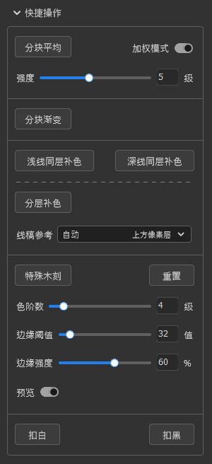
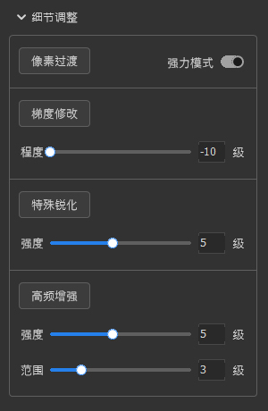
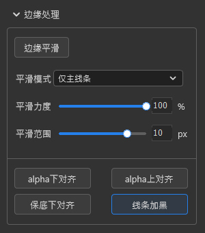
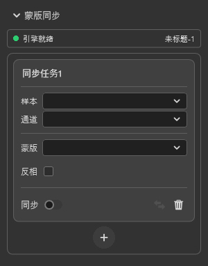
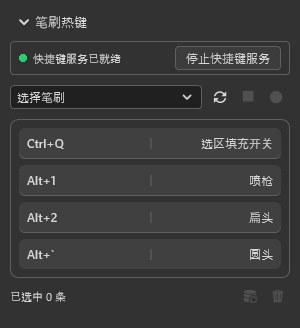

绘画工具箱 使用说明
一组针对选区像素的批处理工具（分块平均、补色、木刻、锐化、边缘平滑、消除锯齿、alpha 对齐、扣白扣黑等），一个「蒙版同步」引擎，以及可直接切换笔刷的全局快捷键。
1. 面板概览
绘画工具箱是悦绘的第二个面板，处理对象是选区内的已有像素。它不生成内容，只对当前文档的像素做批量加工：消除反复描线的深浅不匀、统一半透明笔触的不透明度、磨平分块噪点、修补线稿缝隙、抠出透明底等。
所有功能受授权门控：未激活且非试用时，执行任一功能前都会先提示到选区填充面板完成授权。
能力三大块
- 选区像素处理：分块平均 / 补色 / 木刻 / 锐化 / 边缘平滑 / 消除锯齿 / alpha 对齐 / 扣白扣黑等。
- 蒙版同步引擎：把某图层的通道实时复制到目标蒙版。
- 全局快捷键：通过快捷键服务切换画笔预设，或触发工具箱功能，无需录制 Photoshop 动作。

2. 分区与布局
面板内容由若干分区组成，默认顺序为：快捷操作 → 细节调整 → 边缘处理 → 蒙版同步 → 笔刷热键。
- 分区支持拖拽排序、折叠 / 展开、隐藏 / 显示（见第 8 节菜单）。
- 「复位分区顺序」可恢复默认顺序。
多数处理动作是按钮：直接点击即按当前参数执行一次。带参数的动作会把参数行显示在按钮下方，其中圆形滑块可以拖动，也可以直接在右侧数字框中输入精确数值。
3. 快捷操作
分块平均
对每个不相连的选区分别求平均并填充为单一颜色，用于快速压平分块噪点。Photoshop 原生的平均会把不相连选区的像素混在一起计算，需要分别平均多个区域时用本功能更省事。
| 参数 | 说明 |
|---|---|
| 对比减弱 | 开关。开启后不直接磨平成纯色，而是让块内像素向其平均色靠拢，保留原有明暗层次：偏离越大的像素（如深色线条）被压得越多，偏差小的像素几乎不动。 |
| 强度 | 1–10 级（开启对比减弱后显示）。1 级最弱，10 级最接近纯色。偏离极大的像素会被保留一部分，高强度时特征不会被压平。 |
分块渐变
对每个不相连的选区分别取色填充。多个选区连起来看，相当于分布在同一层渐变上。渐变数据取自选区填充面板「渐变设置」的最终预览（含角度与反向）。
浅线 / 深线同层补色
线稿与填充在同一图层时使用，按亮度均值把线内区域补实。两者的区别只在“线比填充浅”还是“线比填充深”：
| 按钮 | 说明 |
|---|---|
| 浅线同层补色 | 线比填充浅（如浅灰线 + 深色填充）。只把较深的内部填充色作为来源，补色不会带上线稿浅色。尖角、缝隙、孔洞一并填实。 |
| 深线同层补色 | 线比填充深（如黑色线稿 + 红色填充）。只把较浅的内部填充色作为来源，补色不会把线条染黑。尖角、缝隙、孔洞一并填实。 |
分层补色
线稿与填充在不同图层时使用，以线稿轮廓引导补全，尖角、孔洞、缝隙一网打尽。
「线稿参考」下拉默认「自动」＝当前层上方最近的像素图层；也可手动指定。找不到可用线稿层时，分层补色自动退回同层算法。
特殊木刻
木刻量化会让颜色出现阶梯状色阶。本功能会额外识别透明 / 半透明边缘，并在边缘处按强度叠加木刻，使边缘与内部风格一致。仅修改颜色，不改变不透明度。
| 参数 | 说明 |
|---|---|
| 色阶数 | 2–16 级。越小越“硬”，越大越细腻。 |
| 边缘阈值 | 0–255。越低越容易把更多区域视为边缘。 |
| 边缘强度 | 0–100%。边缘处叠加木刻的强度。 |
| 预览 | 开关（默认关闭）。开启后，滑动下方滑块或点「重置」会在 300ms 内自动刷新预览；关闭预览会还原到预览前的图像。 |
| 重置 | 恢复默认参数。 |
扣除纯白 / 扣除纯黑
把“纯色底上叠加的半透明内容”抠回透明底，保留内容本身。检验标准：结果放回原来的底色上，与原图视觉一致。
- 扣除纯白：移除白色底。
- 扣除纯黑：移除黑色底。处理时先反相，按扣除纯白的方式处理后再反相，因此比手动“反选删暗部”更彻底，不会偏暗。
alpha 对齐（下 / 上 / 众）
三个按钮都把选区内容的不透明度统一到同一个水平（整片归一，只改不透明度、不改变颜色），区别在于基准取哪个：
| 按钮 | 基准 |
|---|---|
| alpha 下对齐 | 选区内最浅的一档（Alpha 最小值）。用于消除两笔交汇处的“深色点”与反复叠画积累的“叠画带”。 |
| alpha 上对齐 | 选区内最深的一档（Alpha 最大值）。用于把没画透、被擦淡的笔画整体补实。 |
| alpha 众对齐 | 出现次数最多的那一档（众数）。适合半透明笔刷反复叠画后各处参差不齐、色块内部有噪点的情况——基准由整个选区唯一确定，不会出现斑驳与条纹。 |
4. 细节调整
像素过渡
一种特制的模糊过渡，计算时屏蔽透明（alpha = 0）像素，从而更好地保护形状。
| 参数 | 说明 |
|---|---|
| 强力模式 | 开关。开启后半径与强度由插件自动推算，无需手动调节；下方滑块隐藏。适用于不确定该设多少、或选区中笔触粗细不一的情况。 |
| 半径 | 5–20px（普通模式）。决定参考范围大小：半径越大，过渡更柔和但更慢。小图建议 5–10px，大图建议 10–20px。 |
| 强度 | 1–5 级（普通模式）。决定过渡幅度：数值越大，边缘越圆滑。轻微处理用 1–2 级，明显去锯齿用 3–5 级。 |
梯度修改
修改选区内过渡的形态，同时作用于颜色与不透明度。程度 -10 ~ 10 级：负值放缓（过渡更宽更柔），正值陡峭（过渡更窄更硬），0 为不修改。绝对值越大影响越明显、也越慢。
特殊锐化
一种更“硬”的局部锐化，强化过渡边缘与对比，仅对选区内生效。强度 1–10 级，建议 2–6 用于轻中度增强，7–10 用于强烈强化。
高频增强
提升细小纹理与微对比，大的形体与明暗结构不被破坏。强度 1–10 级（1–4 用于精修，5–8 用于明显锐化），范围 1–10 级（值小偏向极细纹理，值大兼顾较粗纹理）。

5. 边缘处理
边缘平滑
右上角开关切换两种模式：开启为色块边缘模式，关闭为主线条模式（默认关闭）。下方参数行随模式切换。
| 模式 | 参数 |
|---|---|
| 色块边缘 | 中间值半径 10–30px：对选区做“中间值”平滑，并在边缘处渐隐，避免边界感。半径越大边缘越柔和但更慢。 |
| 主线条 | 见下方三项。沿线条方向平滑，适合处理反复描线、笔压深浅造成的线条瑕疵。 |
主线条模式下的参数：
| 参数 | 说明 |
|---|---|
| 平滑力度 | 0–100%（默认 100%）。沿线条方向平滑：暗痕（反复描线）被磨平拉实，亮痕保持，同时削弱毛刺。数值越低改动越保守。 |
| 曲率平滑 | 3–9px（默认 8）。决定轮廓几何被磨到多细的尺度：值越大越能把轮廓上的细碎起伏、锯齿、毛刺磨圆。实际力度会按该处线宽封顶，保证细线不被磨细或磨断。 |
| 宽度平滑 | 0–700px（0 = 关闭，默认 0）。沿笔轴平滑线条的粗细，压平手绘长线常见的“一段粗一段细”波浪与单侧凸起。数值需大于起伏的一个完整波长才有效，建议 200–450；比整条笔画还长时会把线拉成均匀宽度。以连通的一整条线为单位处理，相邻线条互不影响；发丝、T 形细支等明显细于主体的段落不参与。 |
| 不透明度平滑 | 0–700px（默认 250）。沿笔轴平滑线条的不透明度，把每个横截面的浓度拉平到自身的长波趋势，处理笔压深浅造成的“一段浓一段淡”与反复描摹留下的浅痕。数值需大于浓淡起伏的一个完整波长，建议 150–450。只改变不透明度分布，不改变轮廓位置与颜色。 |
消除锯齿
把轮廓上的硬边台阶磨成一条干净的过渡带，轮廓位置与整体形状不变。铅笔硬边、硬笔刷、套索或魔棒填出的色块都能用，半透明色块同样适用。
- 过渡带的不透明度按形状自身等比生成——形状多透明，边就多淡，半透明色块不会出现“湿边”。
- 轮廓内侧只减不增、外侧只补不削，原本柔和的边缘不会被重新变硬；已经自带抗锯齿的边不会重复处理。
- 细线（4px 以内）单独重建：把阶梯边还原成连续的细边线，线宽与不透明度不变；带压感渐变的笔触按每段自身的浓淡分别处理。
- 柔化宽度 0.5–2px（默认 2px）：新过渡带的宽度。数值大一些更柔和，小一些更接近硬边；只决定过渡带软硬，不改变轮廓位置。
线条加黑
增强边缘线条的不透明度，使轮廓更清晰，适合线稿、UI 描边、图标轮廓。未建立选区时默认对整幅图处理。仅普通像素图层；背景层会提示先选择不透明底的线稿图层。
极值微调
线条污渍专用。与上面三个 alpha 对齐按钮不同：那三个是整片抹平、只动不透明度；这两个是局部修正，且颜色与不透明度一起修，只处理偏离周围线条的离群点，线条原有的深浅层次与羽化过渡都会保留。
| 按钮 | 说明 |
|---|---|
| 提升下极值 | 把比周围线条明显更淡、更暗的斑块（没画透、被擦淡、蹭脏发暗）连同颜色一起抬回主体水平。只增不减。 |
| 削弱上极值 | 把比周围线条明显更实、更亮的斑块（两笔交叠处更深的点、反复叠画积累的深色、蹭亮的色斑）连同颜色一起压低到主体水平。只减不增。 |
参考水平取自周围线条（可读到选区外的线条），所以选区只框住要修的污渍也能找到正确水平；不建选区则处理整张图层。仅对非背景的普通像素图层生效。

6. 蒙版同步
把某图层的通道实时复制到目标蒙版。顶部状态条显示引擎状态、文档名与任务数量。
单条同步任务
| 控件 | 说明 |
|---|---|
| 样本 | 像素 / 调整 / 背景图层，或带蒙版的图层组。 |
| 通道 | 灰阶 / R / G / B / A / 蒙版 / 色相 / 饱和度。可选范围随样本图层类型变化：背景层只有灰阶 / R / G / B / 色相 / 饱和度；调整层无 A / 蒙版；普通像素层全部可选；带蒙版的图层组只能取蒙版。 |
| 蒙版 | 目标图层，须带蒙版。 |
| 反相 | 开关，取 255 − 值。 |
| 同步 / 立即同步 / 删除 | 同步开关（开启后自动更新）、立即同步图标、删除图标；双击任务名可重命名。 |
底部「+」新建同步任务（空态显示「点击 + 新建同步任务」）。每条任务下方有一行「上次同步状态」，例如「已写入蒙版 12:30:01」，或给出未完成的原因，如「未配置完成：请选择样本图层、通道与目标蒙版」。

7. 笔刷热键与功能快捷键
全局快捷键由本地的「快捷键服务」提供：直接在画布上按组合键即可切换画笔预设或触发工具箱功能，无需录制 Photoshop 动作。
笔刷热键
面板内的「笔刷热键」分区负责画笔预设的快捷键：
- 在「选择笔刷」下拉中选一支画笔预设（自动读取 Photoshop 的画笔预设；若无法自动读取，可手动输入预设名，需与 Photoshop 中的名称完全一致）。
- 点红色录制圆点，然后按下要绑定的组合键。可绑定的键：字母 A–Z、数字 0–9、F1–F24，以及
;',./-=`[]\等符号键，还有方向键 / 空格 / Tab / Insert / Delete / Home / End / PageUp / PageDown 以及小键盘 Num0–Num9。 - 录制中按 Esc 或点停止可以取消本次录制。
列表显示「组合键 丨 名称」，支持单击选中、Ctrl+单击加选 / 减选、Shift+单击选择区段；双击可重录，选中单条后按退格键解绑（条目保留），长按可拖拽调整顺序。按快捷键后会有即时提示，如「已切换笔刷『笔刷名』」。
功能快捷键
点右上角 ⋮ 菜单 → 功能快捷键，打开专门管理“非笔刷功能”的子面板。面板里的各个功能按钮（分块平均、补色、木刻、边缘处理等）以及「选区填充」的纯色 / 图案 / 渐变子面板开关，都可以在这里录制组合键。
功能按所在分区分组展示（选区填充 / 快捷操作 / 细节调整 / 边缘处理），其中「选区填充开关」的录制行固定在最上方。记录交互与笔刷热键分区一致：单击选中，双击录制或重录，按组合键后回车确认、Esc 取消，选中后按退格键解绑。
连接与状态
「笔刷热键」分区的状态条显示「快捷键服务已就绪 / 处理中… / 未启动」，右侧按钮用于启动或停止快捷键服务：
- 启动：在后台启动快捷键服务（无窗口，并登记开机自启）。
- 停止：让快捷键服务退出，便于卸载。卸载插件前需先停止，否则安装目录里的文件被占用、删不掉。
键盘卡死一键修复
系统键盘出现以下任一种情况时，可用鼠标点这个菜单项自救，全程不需要键盘输入：
- 打字突然完全没反应。
- 键盘冻结，需要重新插拔才恢复。
- 某个键按下后不停重复（可先把同一个键再按一次解除，仍不行再用本功能）。
修复完成后，如需继续使用全局快捷键，回到「笔刷热键」分区点「启动快捷键服务」即可。
卸载快捷键服务
优先由快捷键服务自行移除（取消开机自启并删除安装目录）；未连接时回退到卸载脚本。卸载过程全程无交互，不会停下来等待确认，因此键盘失效时也能正常执行。已录制的快捷键配置会保留，仅移除程序文件与开机自启。

9. 授权与试用
面板顶部有授权状态横幅，由共享的授权状态驱动（与选区填充面板同步）：
| 状态 | 横幅 |
|---|---|
| 试用中且剩余天数 > 0 | 绿点 + 「试用还剩 N 天」。 |
| 试用结束 / 未激活 | 提示到选区填充面板完成激活。 |
- 未授权且非试用时，面板在横幅下方覆盖锁定遮罩，隐藏全部可编辑控件。
- 每次执行功能前都会先检查授权状态：未授权且非试用会提示并阻断。
- 本面板本身不弹出授权对话框，仅同步状态；授权在选区填充面板完成。
10. 常见问题
点击功能没反应？
工具箱功能受授权门控，请先到选区填充面板激活或开始试用。另外请确认当前图层类型符合该功能的要求（多数功能仅支持非背景的普通像素图层）。
键盘突然打不出字了？
先用鼠标点右上角菜单的「键盘卡死一键修复」，通常立即恢复。
绑了笔刷热键但切换不了，或切换到的不是我要的那支？
先检查笔刷名是否与「画笔」面板完全一致，并确认快捷键服务处于「已就绪」绿点状态。若总是切到列表较上方的那支，说明存在同名笔刷——热键不支持区分同名笔刷，请在 Photoshop 中把同名笔刷改成不同名称。
蒙版同步没有自动更新？
目标层须带蒙版，且样本 / 通道 / 蒙版需配置完整；也可点「立即同步」手动触发。
菜单里有几项点了没反应？
请检查是否正开着激活对话框：此时只有「使用手册」可用，其余条目处于置灰状态。